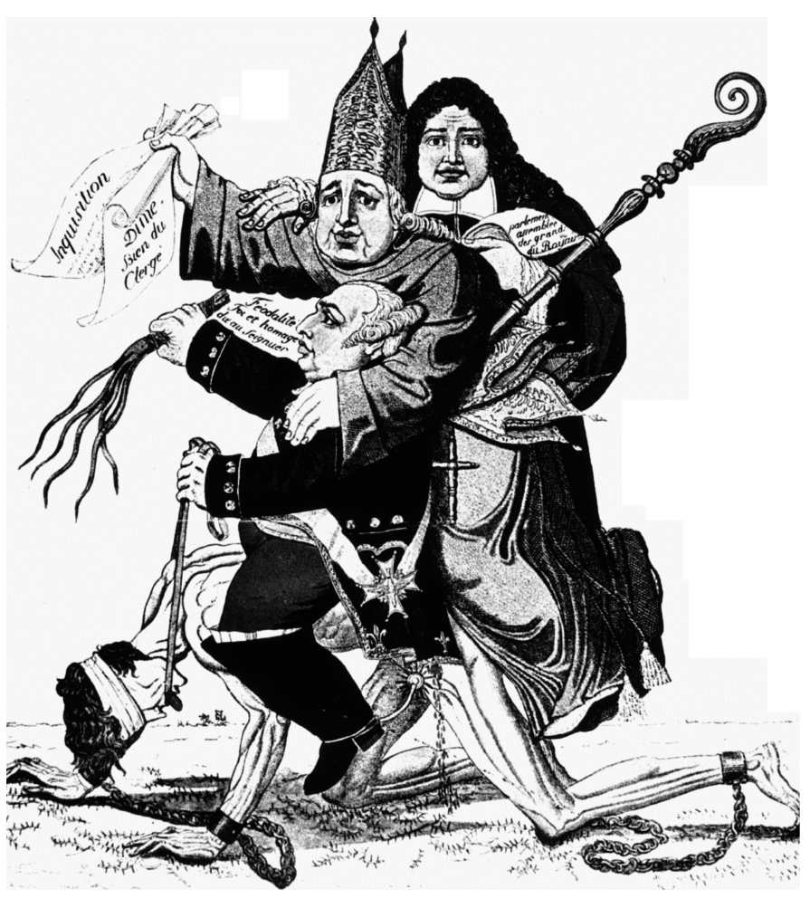
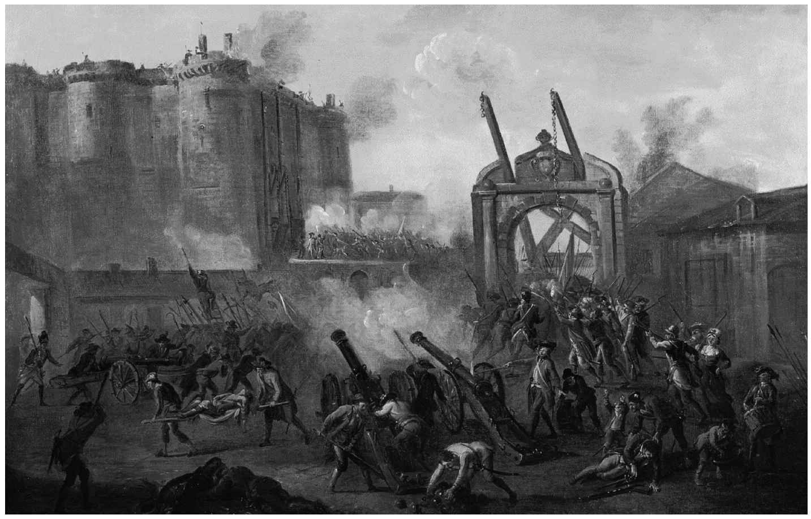
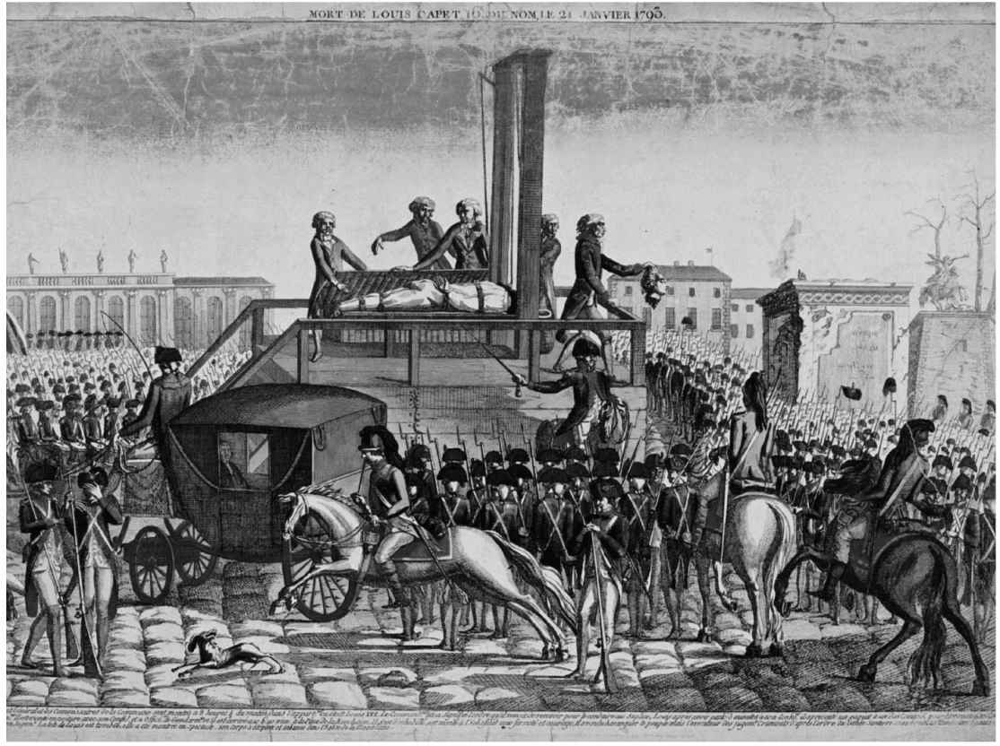

革命的根源
法国革命在世界历史的舞台上较英国革命或美国革命显得突出得多。它比那些较早的变革引起更多的经济变化和社会变化，并在世界上的其他地方产生了更广泛的影响。法国革命不仅标志着资产阶级的胜利，而且标志着民众的充分觉醒。虽然中产阶级的自由主义已引人注目，但对各阶层人们有号召力的民族主义也已出现。的确，“这些人”以往长期地待在舞台两侧，这时则大踏步地走到舞台前方，此后更是一直留在那里。
为什么这一巨变会发生在法国呢？其根本原因是：法国虽是启蒙运动的故乡，但在拿破仑登场前，却并不是由开明专制君主统治的。因而，法国是一个极其低效和不公正的国家，以致统治机构摇摇欲坠地陷于停摆状态。正是政府的这种停顿状态，使野心勃勃、心怀不满的资产阶级有机会成功地夺得政权。
法国的旧政权就其组织而言是贵族政权。所有法国人在法律上都属于某一“等级”，即社会阶层，这种成员资格决定了他们的法定权利和特权。第一等级由教士组成，教士在2450万的总人口中总共有10万左右。第二等级由贵族组成，总数约达40万。第三等级包括其他所有的人——2000多万农民、约400万城市商人和工匠等。因而，前两个等级仅占总人口的2%，但是，他们拥有约35％的土地，并因政府庇护而享有大部分好处。尽管他们取得这些不相称的利益，却被免除几乎所有的税；实际上，他们认为纳税是有失其身份的。
因而，税收负担落在第三等级的肩上，尤其是落在农民的肩上。后者占总人口的80％以上，但仅拥有30％的土地。而且，农民须向教会交纳农产品什一税，向贵族交纳各种封建税，向国家交纳田赋、所得税、人头税和其他各种税。1720年至1789年间总的物价水平上涨了65％，而农产品的价格（农民的收入来源）则远远落后，这一税收负担因此特别繁重。
城市中的工匠也心怀不满，因为他们的工资在上述数十年间仅上涨了22%。相比之下，资产阶级并没在纳税方面感到困顿，因为他们比工匠和农民更能保护自己。而且，大部分商人都从物价上涨、从1713年至1789年间增长了5倍的法国贸易中获得了不小的收益。然而，资产阶级对旧政权极不满意。他们愤恨自己受到贵族的冷落，被王室看作二等臣民并被排除在官僚机构、教会和军队中的高级职位之外。简言之，资产阶级想要获得与他们日渐增长的经济力量相称的政治权力和社会声望。

图195 这幅作于18世纪末期的漫画讽刺了法国的社会结构。它描画了一个戴着镣铐的穷人；穷人占人口的绝大多数，他们供养着贵族、主教和议员。画中的贵族正在宣扬封建权利，主教手中拿着有关宗教迫害和僧侣特权的文书，而议员则拿着一份文件，上列贵族统治的议会的权利。
贵族革命
当大变动开始时，法国旧政权的性质就是如上所述。法国革命同古往今来的其他革命一样，先是温和地开始，逐渐地变得越来越激进。实际上，它不是作为资产阶级革命开始于1789年，而是作为贵族革命开始于1787年。然后，它通过资产阶级阶段和民众阶段而向左转，直到发生了一个反动，导致拿破仑执掌政权。
贵族开始革命，是因为他们希望恢复自己在16和17世纪期间被王室夺走的政治权力。国王的地方特别行政长官已取代了贵族总督，国王的官吏已控制了全国各级统治权。君主们的权力反映在以下事实中：从1614年起，他们已不必费心召开三级会议即国家议会。因此，不难理解，当路易十六由于支持北美革命的大量支出而陷于经济困难时，贵族就试图利用这一机会来恢复权力。
1787年，当路易试图不顾土地所有者的社会地位，向所有地产征收一种统一税时，贵族和教士就开始发难了。特权阶层谴责这种新的税为非法的，宣称唯有集会于三级会议的全体国民才能决定如此重大的改革。由于财政十分困难，国王最终让步，允诺在1789年春天召开三级会议。贵族以为他们能控制这一会议，从而重新获得在政治上的统治地位。但是，他们的盘算被证明是完全错误的。三级会议的召开所导致的不是贵族的胜利，而是掀起了一个巨大的革命浪潮。这一浪潮将扫除法国和欧洲大部分地区已确立的制度和统治阶级。
资产阶级革命
1789年5月5日在凡尔赛召开的三级会议并不代表法国人民，而是代表以往所划分的三个等级。从一开始，第三等级就是最有生气、最具决定性的。第三等级占有人数上的优势，有代表600名，而其他两个等级的代表各为300名。实际上，第三等级的代表超过了另外两个等级代表的总和，因为不仅一些教士，而且一些思想解放的贵族（如曾为美国的革命事业奋斗过的拉法耶特侯爵），都站到了第三等级一边。中产阶级的代表还有一些改良主义的想法。他们知道自己要改变法国的旧制度，并从哲人们的著作中至少掌握了应该如何实现这一变革的一般思想。中产阶级的代表还拥有政府迫切需要的现金，并毫不犹豫地利用这一有力武器去争取他们希望得到的各种权益。
平民们通过迫使国王路易把三级会议改变成国民议会而赢得他们的第一个胜利。这是一个极其重要的改变，因为只要决议是在等级的基础上作出，第三等级就永远处于三分之一的少数地位。而一旦三个等级的代表联合组成国民议会，平民（包括他们在另外两个阵营中的盟友）就会处于多数。国王路易是个相当愚蠢且缺乏想象力的人，他最初在这一关键性的问题上犹豫不决，但当平民大胆地反抗他、并宣布自己为国民议会时，路易于6月23日投降了，下令将三个等级合并为一。
国王的让步并不表示他内心的转变。他继续重视所谓的“王后党”——玛丽·安托瓦内特的反动顾问们的劝告。国王的真正意图在他于7月11日解除雅克·内克的职务时暴露无遗，因为这位大臣被认为是最赞成改革的。与此同时，忠实于国王的几个军团则被秘密地调至凡尔赛。国王正准备用武力解散议会的谣言迅速传播开来。而且，似乎也没有什么能够阻止国王这样做。国王有刺刀，而平民只有口舌和决心。但是，在这紧要关头，国民议会中的平民因巴黎平民的起义而得救。民众进行了决定性的干预，发动了第三阶段即民众阶段的革命。
民众革命
这时拯救法国革命的民众并非街头群氓。实际上，他们是由店主和作坊老板组成的小资产阶级。他们传播消息，组织示威游行，而手下不识字的雇工和职员们则追随他们的领导。革命是在内克被免职以后爆发的，暴动的民众涌上街头，要求更廉价的面包，并抬着身披丧服的内克的半身雕塑像游行。7月14日，他们攻破并拆毁了巴黎一座用作监狱的王室古堡——巴士底狱。这一事件本身并没有什么实际作用，因为巴士底狱这时已很少被使用。不过，巴士底狱在平民的心目中则是压迫的象征，此时这一象征被摧毁了。“巴士底日”在法国如同“独立纪念日”在美国那样，现在仍得到庆祝，其原因就在于此。
巴士底狱的陷落标志着民众登上了历史舞台。他们的干预挽救了资产阶级，从此以后，后者不得不在关键时刻依靠街头暴民提供“一剂革命良药”。这样的时刻在后来的岁月里有过许多次，如资产阶级为争得权力而进行反对国王、反对特权阶层、最后反对整个欧洲的旧秩序的斗争时就是如此。
民众革命不仅发生在巴黎，也发生在农村。农民在长期苦难的刺激下，在攻破巴士底狱的振奋消息的激励下，拿起了武器。在农村的许多地方，他们拆除篱笆，夺取土地，烧毁庄园主的住宅。面临这种革命形势，国民议会中的贵族和教士只得屈服于现实，和平民一起投票赞成废除封建制度。在1789年著名的“八月的日子”里，通过了废除一切封建税、免税特权、教会征收什一税的权利，以及贵族担任公职的专有权的法规。在国民议会所规定的其他许多重要措施中，较突出的是没收教会土地、改革司法制度和行政制度，以及通过《人权和公民权宣言》。

图196 1789年7月14日，群众蜂拥攻入巴黎的一座监狱——巴士底狱。虽然这一事件的实际效果只是救出了狱中的少数人，但它却标志着巴黎的民众首次改变了革命的进程。
这份宣言阐明了关于自由、财产和安全的基本原则——“人生来就是而且始终是自由的，在权利方面一律平等……整个主权的本原根本上仍存在于国民……法律是公意的表达……自由是指能从事一切无害于他人的行为……”最后一个条款表明，资产阶级并没有失去对革命方向的控制：“财产权是神圣不可侵犯的，除非合法认定的公共需要明白地提出要求，同时基于公正和预先补偿的条件，任何人的财产皆不可受到剥夺。”这份宣言是革命的基本要旨。宣言被印成许许多多的传单、小册子、书籍，并被翻译成其他语言，使“自由、平等、博爱”的革命口号传播到整个欧洲，最后传播到整个世界。
国王路易决不愿意接受8月4日的彻底改革或宣言的革命原则。但是巴黎暴民却再一次战胜了王室的反对。10月初，以妇女为主体的饥饿民众袭击了巴黎的面包铺，然后向凡尔赛的王宫进军。在这些民众的压力下，路易同意将宫廷迁到巴黎。王室成员住进了杜伊勒里宫（巴黎的一座宫殿），在那里，他们实际上成为囚犯，而国民议会则设在附近的一所骑兵学校里。10月的骚动确保了对8月法令的批准，也大大增加了巴黎暴动民众的影响力。王室和国民议会在民众行动面前渐无招架之力。
战争和恐怖
虽然巴黎的国王实际已无权力，但许多教士和贵族决心恢复他们失去的财产和特权。其中有些人逃亡国外，在国外努力设法使外国列强卷入反对法国革命政权的纠纷中去。他们的努力是成功的。国民议会中的激进派即吉伦特派也赞成战争，因为他们相信一个共和国可以由此在法国得以建立，革命学说可以由此传播到整个欧洲。随着奥地利和普鲁士站在反对法国一边，战争于1792年4月爆发。最初，仓促应战的法国人被击溃，但是，无数的志愿者在全国性的爱国主义浪潮中成群结队地涌到法国的旗帜下。同时，巴黎暴动民众加入反对不得人心的路易及其受人憎恨的奥地利籍王后玛丽·安托瓦内特的行动中。在民众的压力下，国民议会于8月10日暂时停止了国王的职权，号召人们参加国民公会的选举。
经男子普遍选举产生的国民公会于1792年9月21日召开，在解决最迫切的问题即保卫祖国、反对奥地利——普鲁士侵略者方面取得了辉煌的成功。革命热忱和群众支持相结合迸发的力量，被证明是不可抵挡的，普鲁士人和奥地利人被赶出了边境。1793年，英国、荷兰和西班牙加入了反法联盟。革命者的反应是进行著名的全民总动员。人民起来保卫祖国。14支军队在行伍出身的青年将领们的指挥下，奔赴战场。在“自由、平等、博爱”的革命口号的鼓舞下，法国民众军队以破竹之势前进。到1795年，敌人的联盟已被粉碎。
其时，国民公会愈来愈向左转，在一定程度上，这不仅是因为它经普选产生，还因为对战争的努力引起了革命热情。到1793年6月，吉伦特派已由激进的雅各宾派取代。这时，居支配地位的统治机关是救国委员会。这个委员会以革命热情和热烈的爱国精神任用和罢免将军，鼓舞群众参加英勇的行动，实施对外政策，对无数的问题立法，并通过一个无情的恐怖统治时期来镇压反抗。许许多多的人因叛国罪或者仅仅因爱国精神不够而受到指控，并被送上了断头台，即当时所称的“国家剃刀”。
但是，恐怖统治失去了控制，革命开始“吞灭它自己的儿女”。在不断的权力斗争中，一个接一个革命领袖继路易和安托瓦内特之后被送上了断头台。对资产阶级来说，同样扰乱人心的是革命的社会激进主义不断增长。无套裤汉（字义上指不穿上流社会那种紧身短套裤的人们）正在迫切要求建立一个更平均主义的国家。他们相当于英国革命的平均派，而且他们要求更公平地分配土地，由政府管控物价和工资，并建立一种社会安全体制。这类措施完全超出法国资产阶级的计划。因此，法国资产阶级同英国资产阶级一样，努力阻挡革命向左的方向发展。在英国，结果是平均派被击败，克伦威尔上台。在法国，无套裤汉先是于1795年受到一个由五名督政官执掌的督政府的控制，后又于1799年受到拿破仑·波拿巴的控制。

图197 1793年1月21日，法国国王路易十六被处死。
拿破仑
拿破仑作为在意大利取得辉煌成就的将军而赢得声望，他利用自己的声望推翻了督政府。他先是作为1799年至1804年的第一执政，后又作为1804年至1814年的皇帝，统治了法国。值得我们注意的是，他对法国的15年统治有两个特点：国内改革和军事战役。前者巩固了革命成果，后者在邻国激起了一种民族主义反应，并最后导致他的垮台。
就国内政策而论，拿破仑可比得上开明的专制君主。他感兴趣的是技术层面上的效率而不是抽象的意识形态。虽然他对国家实行独裁统治，但却有效地统治了国家。他把法律编集成法典，将行政机关置于中央集权制下，组织国民教育体系，建立法兰西银行，并就法国的教会和国家间的关系与教皇达成协议。拿破切实的功绩使他受到普遍的欢迎。渴望复辟旧制度或认为拿破仑背叛了革命的政敌是存在的，但是，大多数人都因他结束骚乱并建立起一个可信任的强力政府而向他欢呼。
拿破仑因不断地推动战争而浪费了这种友好亲善。作为一个军事天才，他取得了惊人的成功。到1810年，他达到成功的顶峰，他已使法国的疆界越过莱茵河伸展到吕贝克，越过阿尔卑斯山脉伸展到罗马。欧洲的其余地区由法国的附属卫星国或盟国组成。只有英国仍保持独立并对法国怀有极大的敌意。
拿破仑在其所有征服地区都贯彻法国革命的一些基本原则。他废除封建制度和农奴制，承认所有公民的平等，实施其著名的《拿破仑法典》。虽然各地的既得利益集团坐立不安，反对这些变革，但变革也在许多地方得到普遍的支持。资产阶级和许多知识分子也赞成这些变革。但事实上，它仍是一种外来的统治，某些地方如有必要，须用武力强制才能推行。拿破仑的非法国臣民终于渐渐对征购、赋税、征兵、战争和关于战争的谣言感到厌烦。法国的统治通常意味着行政管理质量的提高，但是，人们更关注行政管理的法国特性而非其质量的时刻还是到来了。
换句话说，人们已经成为民族主义者，而且他们的民族主义已发展为反抗拿破仑统治的运动。这解释了意大利的动乱、西班牙的武装抵抗和德国日益增强的民族团结。对拿破仑来说，最致命的是他于1812年侵入俄国时所遇到的俄国各阶层人士的激烈抵抗。这种抵抗正像冰天雪地一样，造成拿破仑大军的灾难性毁灭。从俄国冰冻的平原上开始，拿破仑的事业便一落千丈，并不可避免地在厄尔巴岛上结束了。因而，法国革命的意识形态对其创始人发生了反作用。拿破仑所“冒犯”的人民先是因“自由、平等、博爱”的口号而觉醒并充满热情，然后又在其导师背叛自己的原则时转而反对其导师。
从1814年9月到1815年6月召开的维也纳会议，重新炮制了拿破仑垮台之后的欧洲地图；指导这一会议的原则有三个——合法性、遏制和补偿。根据合法性的原则，法国、西班牙、荷兰和意大利诸国的君主均恢复王位。根据遏制的原则，与法国接壤的国家都要尽可能地强大起来。荷兰得到比利时，奥地利得到伦巴第和威尼斯，普鲁士除了得到萨克森的部分地区外，还得到沿莱茵河的一些地区。得胜的同盟国以各种领土补偿自己——挪威划归瑞典，马耳他、锡兰和好望角划归英国，芬兰、比萨拉比亚和波兰的大部分地区划归俄国，达尔马提亚和加利西亚（以及伦巴第和威尼斯）划归奥地利。在预想到以后的事件时，应注意到德国和意大利仍是分裂的：德国是一个由39个邦组成的松散的德意志邦联；意大利是一个包括9个邦的“地理名词”，奥地利因控制着伦巴第和威尼斯而在这9个邦居统治地位。